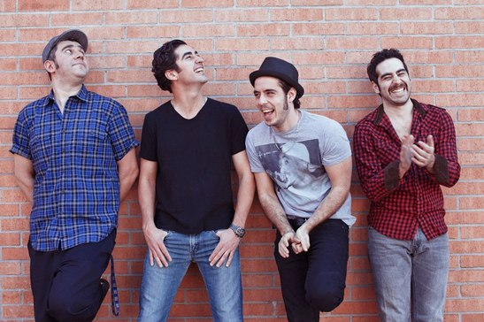

PXNDX
La banda fue fundada en un inicio por Madero, Jorge Garza, Ricardo Treviño y David Castillo, a quien Vásquez reemplazó en 1997. La banda comenzó a producir varias maquetas musicales y más tarde consiguió un contrato con el sello independiente Movic Records. La banda terminó recibiendo atención local en el año 2000 con sus dos primeros álbumes de estudio Arroz con leche (2000) y La revancha del príncipe charro (2002).
En 2003, fueron el acto de apertura de la banda de rock estadounidense Blink-182 durante su breve gira por México. Esto impulsó al grupo, que en ese momento realizaban trabajos ocasionales, a abandonar sus estudios y centrarse en su carrera musical.
El lanzamiento de Para ti con desprecio (2005) se tradujo en un éxito pues alcanzaron el estatus de disco de oro y platino, con ventas superiores a 200 000 copias vendidas. No obstante, la banda se convertiría en el blanco de una reacción masiva por los informes de plagio que habían causado malas críticas y daño a su reputación e imagen en los años siguientes.
Garza se retiró del grupo mientras se grababa Para ti con desprecio y lo reemplazó Arturo Arredondo, guitarrista del grupo Súper Azfalto. Su cuarto material discográfico, Amantes sunt amentes (2006), se convirtió en el disco más vendido de la banda con más de 250 000 álbumes vendidos, además de obtener discos de oro y doble platino, y alcanzar el éxito internacional con Poetics (2009), Bonanza (2012) y Sangre fría (2013).
Después de casi 20 años de trayectoria, el 10 de diciembre de 2015 informaron a través de una conferencia de prensa que la banda entraría en un descanso indefinido luego de ofrecer una gira de despedida llamada Hasta el final, la cual culminó con su último concierto el 28 de febrero de 2016, en la Arena Ciudad de México. Ese mismo año, se anunció que sus miembros tomarían caminos separados, considerando un breve descanso de las grabaciones y/o giras, entrando en un estado de pausa temporal desde entonces. Algunas fuentes determinaron que el grupo finalmente se había separado, pero Treviño respondió diciendo «La gente se cansa de lo mismo; se anuncia un nuevo álbum con 4 sencillos para promocionarlo, y luego salir de gira y luego otro álbum. Además, este descanso sirve a los fanáticos que nos extrañan en el escenario». José Madero siguió una carrera en solitario, mientras que los tres miembros restantes formaron una nueva banda bajo el nombre de Desierto Drive en 2018.
 Escuchar en Spotify
Escuchar en Spotify
 Escuchar en YouTube
Escuchar en YouTube